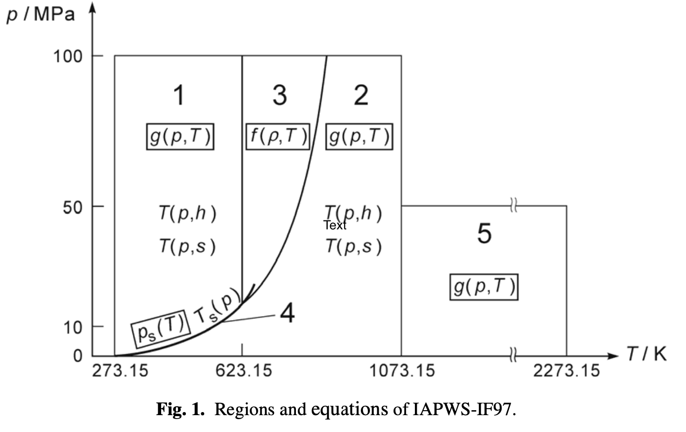

The computation is based on the parameters provided by the technical report R7-97.
The R7-97 report consists of a set of equations for different regions which cover the following range of validity:

The specific gas constant of ordinary water used for this formulation is
This value results from the recommended values of the molar gas constant, and the molar mass of ordinary water (Wagner et al., Harvey et al.). The values of the critical parameters
are from the corresponding IAPWS release.